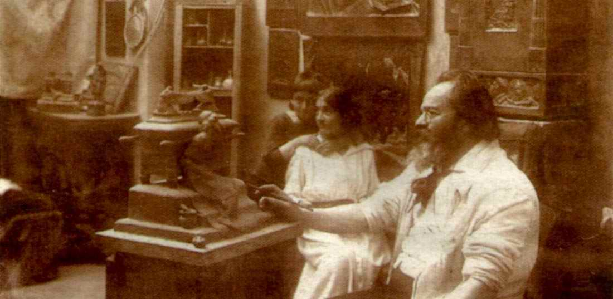
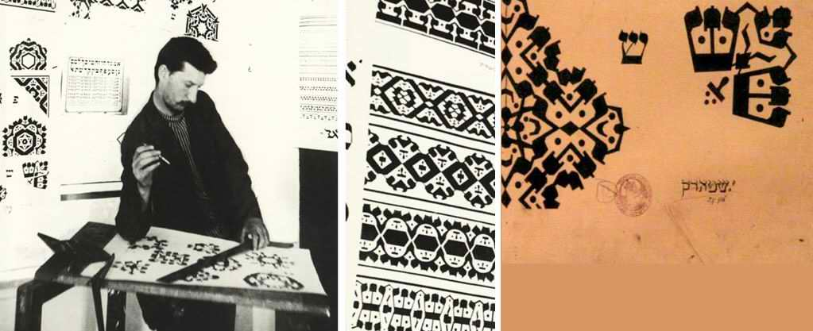
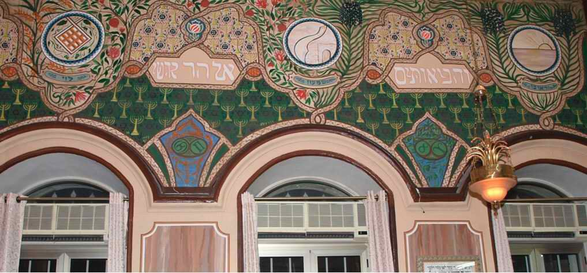
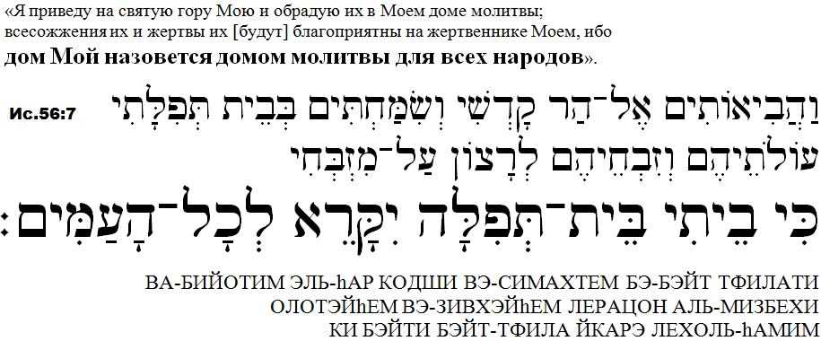
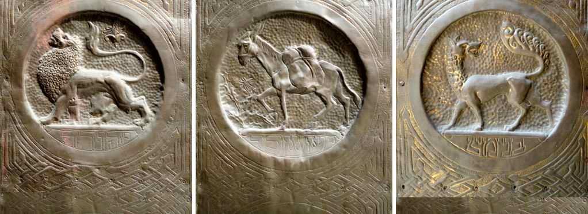
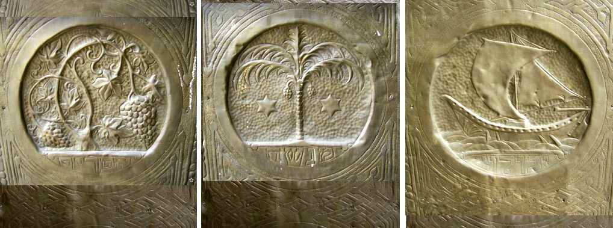
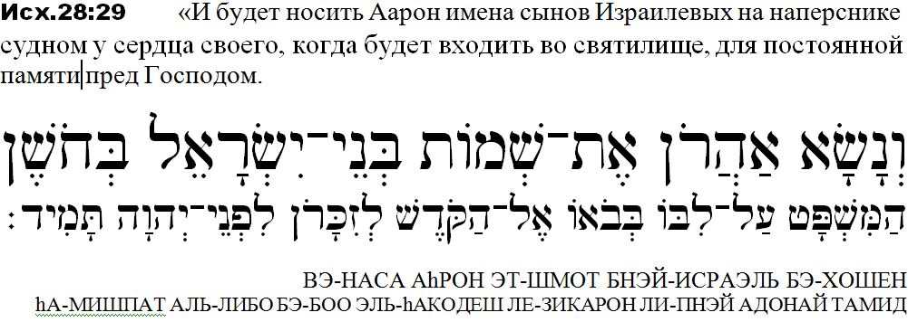

Начало СИОНИСТСКОГО ИСКУССТВА. Часть III
Фреска синагоги Адес представляет собой сугубую ценность. Она воспринимается исследователями, как начало сионистского монументального искусства и внесена в реестр культурного наследия Израиля.
начало статьи см. здесь: часть I и часть II
Надо сказать, что для тогдашнего еврейского мира занятие изобразительным искусством и особенно, скульптурой было своего рода преодоление табу. Это связано со второй заповедью и ее традиционным толкованием (не смотря на то, что в разные века «угол зрения» менялся). Поэтому многие попытки Шаца привнести в синагогу еврейское искусство (в т.ч. изобразительное) встречали сопротивление. Не всегда они встречали теплый прием и в сионисткой среде. Между тем, профессор Шац придавал искусству очень большое значение в процессе возрождения самоидентификации еврейского народа.

Барух Шац, выросший в религиозной семье в Литве и учившийся в одной из ешив Вильно, хотел привнести в убранство синагог новое сионистское искусство.
В ашкеназских синагогах однако, он не встретил понимания и даже столкнулся с противодействием, но нашел заинтересованность лидеров относительно либеральной (в плане искусства) сирийской общины синагоги Адес. Они согласились предоставить стены синагоги для опытов одного из бывших студентов Школы «Бецалель» Старка.

Яаков Старк родился в Кракове в 1881 году. В 1905 году, будучи двадцати четырех лет от роду, он репатриировался в Израиль. Через он становится студентом первого набора Школы Бецалель («Мидраша ле оманут еhудит» основана проф.Борисом Шацем в 1906г.). Позже он становится преподавателем этой школы.
Старк в то время молодой художник и преподаватель «Бецалеля», не смотря на свою бедность с энтузиазмом взялся за работу над фресками для синагоги практически бесплатно.

РОСПИСЬ СИНАГОГИ АДЕС
Сегодня фреска в сефардской синагоге Адес Яакова Старка, законченная им в 1912 включена в реестр культурного наследия Израиля.
Особенно следует отметить три элемента работы художника – изображение шиват а-миним (дары, которые произращала Обетованная Земля), гербы колен Израилевых и большая надпись на иврите.
Если первые две составляющие (1. шиват а-миним – Земля Израиля и 2. Гербы колен представляют весь возрожденный народ Израиля) были связаны непосредственно с Израилем, собираемом Богом в Эрец Исраэль (обетования из многих пророков), то большая надпись на иврите касалась всего человечества – пророчество из книги пророка Йишаяhу (Исайя 56:7).

Почему Старк избрал именно это место Писания, носящее универсальный характер, и совершенно не характерное для ортодоксальной синагоги, мы не знаем, но этим своим выбором он провозглашает со стен синагоги очень важное в эсхатологическом плане пророчество: Израиль должен быть собран в Эрец Исраэль и гора Сион должна стать центром поклонения для всех народов мира!
ПРОРОЧЕСКОЕ ТВОРЧЕСТВО ШКОЛЫ «БЕЦАЛЕЛЬ»
Символично, что в синагоге Адес соединились традиция евреев халаби, уходящая в глубокую древность, и свежая волна изобразительного искусства.
Вопрос стиля был и остается вопросом для обсуждения. Но заслуга Школы «Бецалель» ее основателя и преподавателей, в том что они были первыми, участвуя своим творчеством в возрождении и собирании Израиля в его земле.
Приведу лишь один пример творческого откровения, которым эта школа поделилась не только с израильтянами, вернувшимися на землю отцов, но и с сынами Яакова еще рассеянными по всему свету. Откровение, о котором я говорю без преувеличения можно сравнить с пророческим искусством Бецалеля, от которого нас отделяют три с половиной тыс. лет.
То, что понимается нами сегодня, как само собой разумеющееся в те годы пробивало себе дорогу немалыми усилиями. Сегодня сложно найти такую синагогу, о какой бы стране мы не говорили, чтобы в ней так или иначе не были использованы гербы и символы колен израилевых. А между тем, именно Школа «Бецалель» первой ввела их в обращение.
Школа Бориса Шаца сначала указала направление творческого поиска – Тора и Пророки. Первые волны алии, во многом утратившие свои еврейские ориентиры, искали теперь припасть к истокам ради ответа на вопрос «кто мы, откуда, куда идем».
Важнейшая роль профессора Шаца заключалась таже в том, что он не просто стимулировал эти поиски и их творческую реализацию, но прилагал неимоверные усилия для их распространения во многих еврейских общинах Европы, Америки, России. Он отправляется на разные континенты, устраивая первые художественные выставки из Эрец Исраэль. Это были творческие работы студентов и преподавателей Школы Еврейского Искусства «Бецалель».
Нет, Школа «Бецалель» не выдумала символы колен Израиля сама. Она их УВИДЕЛА в Священных Писаниях и высоко подняла так, чтобы многим стало видно.

Великое дело, скажет кто-то... Увидели в Торе знаки колен. Тоже мне пророчество...
Послушайте, последние две тыс. лет евреи по всему лицу земли читают пророчества Яакова, отца нашего (Быт.49) и Моше рабейну (Вт.33). И не видели того, что увидели на земле отцов полуассимилированные, полусветские, но жаждущие напиться от источника воды живой. Они искали истоки. Моше и Яаков незадолго до своей смерти, каждый в свое время пророчествовали 12-ти коленам Израиля. Пророчествовали об их призвании, будущем, если только послушают слова Господня и исполнят свое «наасэ ве-нишма».
И вот студенты и художники Школы «Бецалель» увидели нечто из глубины веков. Понимали ли они все что увидели? Думаю, нет. Но они "прибили" это перед глазами на косяках дверей, к тенам, дверям синагог. Подобно тфилину и ци-цит для напоминания пред Господом.

И еще одну очень важную вещь я вижу в этом их открытии: эти вденадцать символов, каждый со своим цветом и знаком и надписью, обязательно надпись под гербом – все это подобно хошену (синод. - наперсник) первосвященника с драгоценными камнями и именами колен на груди первосвященника, как написано – для напоминания пред Всевышним должен приносить священник пред господо весь народ израильский. И вот эти знаки, этот наперсник – есть облачение каждой синагоги (за ними и некоторые христианские сообщества помещают в своих молитвенных домах флаги с гербами колен).

И этот наперсник есть напоминание, ходатайство перед Господом о потерянных коленах, напоминание Ему о том, что Он обещал собрать все колена и всех до единого. И евреи молятся во всех городах и странах, куда рассеял их, и полагают этот пророческий наперсник для напоминания пред Всевышним.
Даниэль Круглов: музыкальное размышление к главе Торы "Трумот"
автор Эфраим Калиш /TORAART/